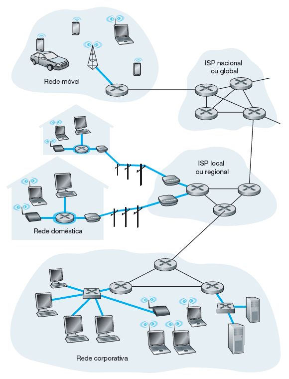

Redes de acesso
Confira agora os principais pontos sobre as famosas redes de acesso.
A rede de acesso é uma rede física que conecta os sistemas finais ao primeiro roteador (conhecido como “roteador de borda”) de um caminho partindo de um sistema final até outro qualquer. Podemos dizer que a rede de acesso é o meio físico, ou enlace, que faz a ligação dos sistemas finais ao núcleo da rede.
Veja abaixo as diferentes redes de acesso (linhas em azul):

Os meios físicos podem ser enquadrados em duas categorias:
- Meios guiados
São as redes com fio, ou seja, os sinais são dirigidos ao longo de um meio sólido, tal como um cabo de fibra ótica, que propaga sinais luminosos; um par de fios de cobre trançado ou um cabo coaxial, que propaga sinais elétricos. - Meios não guiados
São as famosas redes wireless. Nestes meios, os sinais se propagam pelo espaço aberto, como é o caso de canais de rádio empregados em redes domésticas sem fio, os sinais da telefonia celular, ou de um canal digital de satélite. Nesses tipos de redes, dizemos que são propagados sinais eletromagnéticos.
As redes de acesso também podem ser divididas em duas categorias, de acordo com a finalidade a que se destina: redes residenciais ou institucionais.
Redes de acesso residenciais
Os tipos de acesso residenciais bastante conhecidos são a linha digital de assinante (DSL), através de cabo coaxial, e a fibra ótica.
Para o DSL, são utilizados os modems DSL que utilizam a linha telefônica existente fornecida pela mesma empresa fornecedora do serviço de telefonia fixa. Já para o acesso através de cabo coaxial, a infraestrutura utilizada é a mesma oferecida pela empresa que fornece o serviço de televisão a cabo.
Comentário
Para o acesso através da fibra ótica, utilizamos o conceito chamado FTTH (fiber to the home), um caminho de fibra ótica diretamente até a residência. Convém ressaltar que FTTH não é um padrão ou protocolo em si, mas apenas um conceito indicando que a fibra ótica chega até a residência ou empresa.
Em geral, uma fibra que sai da central de telecomunicações é compartilhada por várias residências; ela é dividida em fibras individuais do cliente apenas após se aproximar relativamente das casas.
Em locais onde DSL, cabo e FTTH não estão disponíveis (por exemplo, em locais rurais), um enlace de satélite pode ser empregado para conexão (em velocidades mais baixas que as tecnologias tipicamente usadas).
E ainda existe o acesso discado por linhas telefônicas tradicionais, que são os precursores das redes de acesso, no qual um modem doméstico se conecta por uma linha telefônica a um modem no provedor de acesso, ocupando a linha telefônica e com baixas velocidades. Esse tipo de acesso era o mais comum até a década de 1990 e início dos anos 2000.
Curiosidade
Caso não conheça, procure na internet sobre o barulho característico dos modems utilizados no acesso discado.
Redes de acesso institucionais
Algumas das soluções residenciais também podem ser utilizadas para as redes de acesso institucionais, mas as chamadas redes locais (LANs) costumam ser usadas nos ambientes universitários, corporativos e residenciais, para conectar sistemas finais ao roteador de borda da rede, com o uso predominante de um padrão conhecido como ethernet que, tipicamente, emprega cabos metálicos, ou através das redes sem fio, ou wi-Fi, que empregam o padrão IEEE 802.11.
Comentário
É cada vez mais comum utilizarmos as redes de telefonia celular como rede de acesso para acessar a internet, comumente chamando de 4G/3G. Possuem alcance bem maior que o wi-fi e as empresas de telecomunicação têm investido na quinta geração (5G), que oferece redes de acesso remotas de maior velocidade.